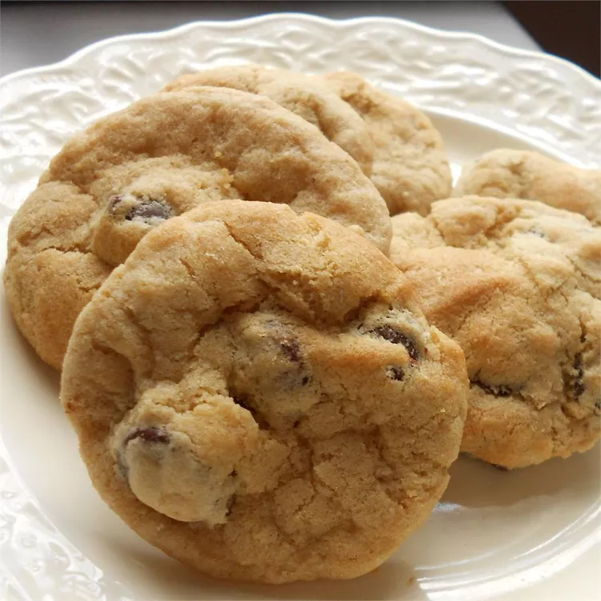

Gluten Free Cookies

Gluten-free, egg-free.
Ingredients
- ¾ cup butter, softened
- 1 ¼ cups packed brown sugar
- ¼ cup white sugar
- 1 teaspoon gluten-free vanilla extract
- ¼ cup egg substitute
- 2 ¼ cups gluten-free baking mix
- 1 teaspoon baking soda
- 1 teaspoon baking powder
- 1 teaspoon salt
- 12 ounces semisweet chocolate chips
Following steps
- Preheat oven to 375 degrees F ( 190 degrees C). Prepare a greased baking sheet.
- In a medium bowl, cream butter and sugar. Gradually add replacer eggs and vanilla while mixing. Sift together gluten- free flour mix, baking soda, baking powder, and salt. Stir into the butter mixture until blended. Finally, stir in the chocolate chips.
- Using a teaspoon, drop cookies 2 inches apart on prepared baking sheet. Bake in preheated oven for 6 to 8 minutes or until light brown. Let cookies cool on baking sheet for 2 minutes before removing to wire racks.